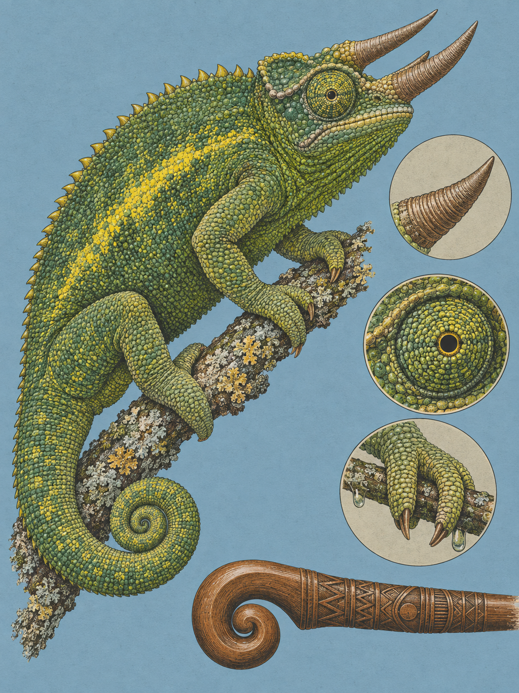

NAIROBI
Trioceros jacksonii
Swahili: „Kinyonga“. Kikuyu: „kĩĩmbu“, „mũriyũ“. Maa: „árrarri“, „nottorrangi“. Kamba: „keembu“

Am Morgen sitzt es ganz außen, wo jeder es sehen kann. Ein hellgrünes Tier auf der Spitze eines Zweiges, in einer Hecke am Stadtrand von Nairobi, den Rücken zur Sonne. Die Nächte kühlen in seinem Lebensraum auf 4 bis 18 Grad ab, und ein Chamäleon, das kalt ist, bleibt zunächst genau dort sitzen: auf einem freien Zweig, bis es seine bevorzugte Körpertemperatur von rund 32 Grad erreicht hat. Dann erst zieht es sich ins schattige Laub zurück, um nicht zu überhitzen. Drei braune Hörner stehen dabei nach vorn, eines auf der Schnauze, zwei über den Augenwülsten. Es ist ein Männchen.
Die Hörner stecken schon im Namen. Der Gattungsname Trioceros kommt aus dem Griechischen, tri heißt „drei“ und keras heißt „Horn“, und er zielt auf genau diesen Kopf. Die Art beschrieb 1896 der belgisch-britische Zoologe George Albert Boulenger am Natural History Museum in London, damals noch als Chamaeleon jacksonii. Das Exemplar, das ihm vorlag, hatte Frederick John Jackson gesammelt (1860 bis 1929), ein britischer Entdecker und Ornithologe. Jackson zog zwischen 1889 und 1891 für die Imperial British East Africa Company durch Kenia und Uganda, um die Gebiete bis zum Viktoriasee für Großbritannien zu sichern, und er sammelte dabei systematisch Präparate. Später wurde er der erste Gouverneur von Kenia. Sein Nachname steht seitdem latinisiert hinter der Gattung.
Vier Sprachen der Region führen einen belegten Namen für das Tier, für Samburu und Giriama fand sich in den geprüften Quellen keiner. Zwei der Wörter lohnen den Vergleich. Das Kikuyu kennt kĩĩmbu, das Kamba keembu, beide sind miteinander verwandt und beide meinen schlicht „Chamäleon“. Die Wörterbücher verzeichnen die Übersetzung, eine Wurzel des Wortstamms nennen sie nicht. Anders das zweite Kikuyu-Wort: mũriyũ meint nicht irgendein Chamäleon, sondern ein gehörntes. Das eine Wort steht für die Gruppe, das andere für die Tiere mit den Hörnern.
Männchen werden mit Schwanz 25 bis 38 Zentimeter lang, Weibchen 15 bis 25, und ausgewachsene Tiere wiegen 90 bis 175 Gramm. Den Weibchen fehlen die drei Hörner in der Regel ganz, an ihrer Stelle sitzen kleine kegelige Schuppen, und nur selten trägt eines ein einzelnes kleines Horn auf der Schnauze. Wozu also die Bewaffnung? Treffen zwei Männchen aufeinander, flachen sie den Körper seitlich ab, rollen den Schwanz ein, blähen sich mit Luft auf, wechseln zu leuchtenden Farben und verhaken ihre Hörner ineinander, um den Rivalen vom Ast zu stoßen. Über den Rücken läuft dabei ein sägezahnförmiger Kamm aus kegeligen Schuppen, bei Männchen oft gelblich.
Das Leuchten ist keine Sache von Farbstoffen. Lange nahm man an, die Tiere verteilten Pigmente in ihren Hautzellen um. 2015 belegten Jérémie Teyssier, Suzanne Saenko und Michel Milinkovitch in Nature Communications etwas anderes: Die Farbe entsteht physikalisch. In einer oberen Hautschicht liegen winzige durchsichtige Guanin-Kristalle in einem dichten Gitter. Ändern sich Stimmung, Temperatur oder die soziale Lage, verschieben Hormone den Druck in den Zellen, und der Abstand zwischen den Kristallen wächst um durchschnittlich 30 Prozent. Ein dichtes Gitter wirft kurze Wellenlängen zurück, also Blau, und zusammen mit dem Gelb der Pigmentzellen ergibt das Grün. Rücken die Kristalle auseinander, verschiebt sich die Reflexion zu Gelb, Orange und Rot. Darunter liegt eine zweite Schicht mit größeren, unregelmäßigeren Kristallen, die Infrarot zurückwirft und an der Wärmeregelung des Tieres mitwirkt.
Was dieses Leuchten in der Heimat kostet, hat ein Zufall sichtbar gemacht. 1972 verschiffte ein Tierhändler 36 Tiere der Unterart T. j. xantholophus aus Kenia nach Oahu auf Hawaii. Die freigesetzten Tiere gründeten dort eine Population. Auf den Inseln fehlen die spezifischen Fressfeinde der Chamäleons, darunter baumlebende Schlangen wie die Afrikanische Baumschlange Dispholidus typus und Vögel wie der Kuckucksweih Aviceda cuculoides. Damit ließ der Druck nach, der die Tiere in Ostafrika zur Tarnung zwingt, und die Auswahl innerhalb der Art wurde bestimmend, also Territorialkampf und Balz. Martin J. Whiting und Devi Stuart-Fox hielten den Chamäleons 2022 Rivalen und Raubtierattrappen vor und veröffentlichten das Ergebnis in Science Advances: Im Männchenkonflikt leuchteten die hawaiianischen Tiere deutlich heller als die kenianischen, und vor der Attrappe eines Vogels tarnten sie sich messbar schlechter. Zwischen dem Export und der Messung lagen 50 bis 65 Generationen. Die Forscher nennen das Merkmalsfreisetzung. Auf Hawaii selbst sind die Tiere inzwischen das Problem: Bis zu 35 Prozent ihrer Nahrung sind dort endemische Wirbellose, darunter akut vom Aussterben bedrohte Baumschnecken der Gattung Achatinella.
Der Bergwald, in dem die Art zu Hause ist, liegt zwischen 1.600 und 2.440 Metern, der Jahresniederschlag übersteigt 127 Zentimeter, und die Morgen sind kalt. Muskeln verlieren in der Kälte an Leistung. Das Chamäleon umgeht das. Christopher V. Anderson und Stephen M. Deban zeigten 2010 in den PNAS, dass die Zunge nicht unmittelbar von Muskelkraft nach vorn geschoben wird. Ein Muskel zieht sich vorher langsam zusammen und lädt elastische Kollagengewebe, so wie man einen Bogen spannt. Beim Auslösen schnellt die Zunge von einem kegelig geformten Zungenbein nach vorn, mit einer auf die Masse bezogenen Spitzenleistung von im Mittel 1.892 Watt je Kilogramm und Beschleunigungen bis 2.590 Meter je Sekundenquadrat. Fällt die Temperatur von 25 auf 15 Grad, wird dieser Schuss nur 10 bis 19 Prozent langsamer. Das Einziehen der Zunge, das an der Muskelkraft hängt, verliert im selben Schritt 42 bis 63 Prozent.
Gejagt wird aus dem Ansitz, vor allem auf Heuschrecken und Grillen, dazu Spinnen, Raupen, Schnecken, Würmer und gelegentlich eine kleine Eidechse oder ein kleiner Vogel. Getrunken wird ausschließlich von Blättern, Tau und Regen. Die Tiere leben einzeln und verteidigen ihr Gebiet. Sie sind lebendgebärend: Nach 190 Tagen setzt ein Weibchen 8 bis 30 Junge ab, jedes in einer klebrigen, durchsichtigen Hülle. Berührt diese Hülle einen Ast, erwacht das Junge, bricht heraus und ist sofort selbstständig und jagdfähig. Es misst dann 4,5 bis 6 Zentimeter und wiegt etwa 0,6 Gramm.
In der Hecke am Stadtrand steht das Männchen weiter außen auf seiner Zweigspitze, die Hörner nach vorn, der Rücken in der Sonne. Die Kristalle in seiner Haut liegen dicht beieinander, und deshalb ist es grün. Kommt ihm jetzt niemand zu nah, bleibt es grün, bis die Wärme reicht. Dann dreht es sich um und ist im Laub verschwunden.
Bei den Bantuvölkern Ostafrikas, zu denen die Kikuyu und die Kamba gehören, erklärt das Chamäleon, warum Menschen sterben (überliefert). Nach der Erschaffung der Welt schickte der höchste Gott, bei Kikuyu und Kamba Ngai oder Mulungu genannt, das Chamäleon zu den Menschen mit der Botschaft, sie seien unsterblich oder würden nach dem Tod wieder erwachen. Der Bote kam nur langsam voran und ließ sich von Früchten und Insekten ablenken. Der Gott änderte seine Meinung oder schickte einen zweiten hinterher, meist einen Vogel, eine Eidechse oder einen Frosch, mit der Nachricht, der Tod sei endgültig. Der zweite war schneller. Als das Chamäleon ankam, nahmen die Menschen seine Botschaft nicht mehr an. Seitdem gilt das Tier in vielen afrikanischen Traditionen als Zeichen des Todes. Ein Kinderlied aus Malawi singt von einem Chamäleon, dem vom Weinen über die vielen Toten die Augen angeschwollen sind (überliefert).
Handel gibt es bis heute. In den 1970er Jahren trieb der Tierhändler Jonathan Leakey den kommerziellen Export aus Kenia voran. Zwischen 2013 und 2023 führte Kenia über 870.000 lebende Tiere aus, davon 81 Prozent Reptilien, und die Ausfuhr lebender Reptilien stieg auf das Zehnfache, von 8.551 Tieren im Jahr 2013 auf 86.330 im Jahr 2023. Das Dreihornchamäleon gehört zu den am häufigsten ausgeführten Arten, 96,1 Prozent des Handels decken Zuchttiere. Die IUCN führt die Art seit der Bewertung von 2014 als nicht gefährdet. Zahlen zum Bestand im Freiland gibt es nicht.
Wo und wann: Karura Forest, die höher gelegenen Ngong Hills, dazu gut bewässerte Gärten und Hecken in Nairobi. Beste Zeit ist der Vormittag: Nach der kühlen Nacht sitzen die Tiere frei an den Astspitzen und wärmen sich, später ziehen sie sich ins Laub zurück. An bewölkten oder regnerischen Tagen sind sie mobiler, grelle Mittagssonne meiden sie. Mit den ersten Regenfällen Anfang Oktober dürfte die Aktivität steigen, das ist aus dem Wasserbedarf der Art abgeleitet, nicht gemessen. Abwarten statt herangehen: Die Fluchtdistanz ist sehr gering, das Tier erstarrt oder schaukelt wie ein Blatt im Wind, aber wer zu dicht herantritt, sieht es sich binnen Minuten dunkelbraun bis fast schwarz verfärben. Dann ist das Hellgrün weg.
Brennweite: 150 bis 600 für das ungestörte Porträt aus Abstand. 45 mm und 26 bis 60 für das Tier im dichten Wald, wenn das Habitat mit ins Bild soll.
Bild-Idee: Das Männchen am Morgen auf der Zweigspitze, im Profil, die drei Hörner nach vorn und der Schwanz eingerollt. Wer den Zungenschuss will, braucht 1/2000 bis 1/3200 Sekunde im schnellen Serienbildmodus (aus den physikalischen Werten abgeleitet); die Projektion dauert 10 bis 55 Millisekunden.